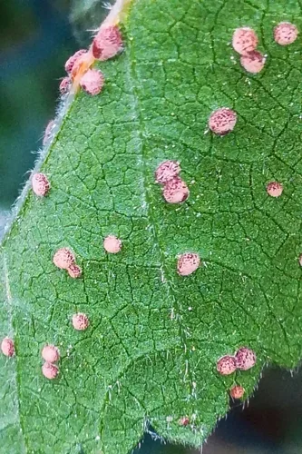

Orange-brown bumps under hollyhock leaves
Hollyhock rust often first becomes obvious when older leaves look spotted from above. Turning over those same leaves gives a second, more specific sign and helps determine how far disease has moved up the stalk.

Inspect the plant
Inspect the lowest green hollyhock leaves first. Pale yellow spots on top often match raised cinnamon-brown pustules on the underside. Mark the height of the highest visibly affected leaf when you first inspect the plant. Later checks can then distinguish fresh spread from pustules that were present all along.
Distinguish similar signs
Check nearby mallows as well as the hollyhock. A flat tan spot without a corresponding raised lower surface gives less support for rust.
Choose a response
Pick a small number of infected lower leaves early. Avoid stripping the entire plant; clear infected stalks and leaves from the bed at season's end.
Follow up
Check the next higher tier of leaves after rain. Photograph both sides of the same leaf to document upward movement through the canopy.
A detail to record
Check each hollyhock stalk growing from the same crown and record the highest affected leaf separately on each. Combining several stalks into one height estimate can hide a newly affected stem.
Check nearby mallows leaf by leaf
If rust returns to hollyhocks each season, inspect the lowest leaves on volunteer mallows near the bed for similar raised pustules. Photograph and identify the plant before removing it. An orange mark on an unrelated neighbor does not establish that it carries the same rust.